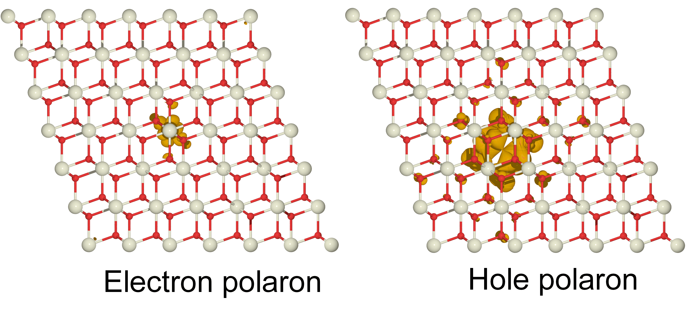
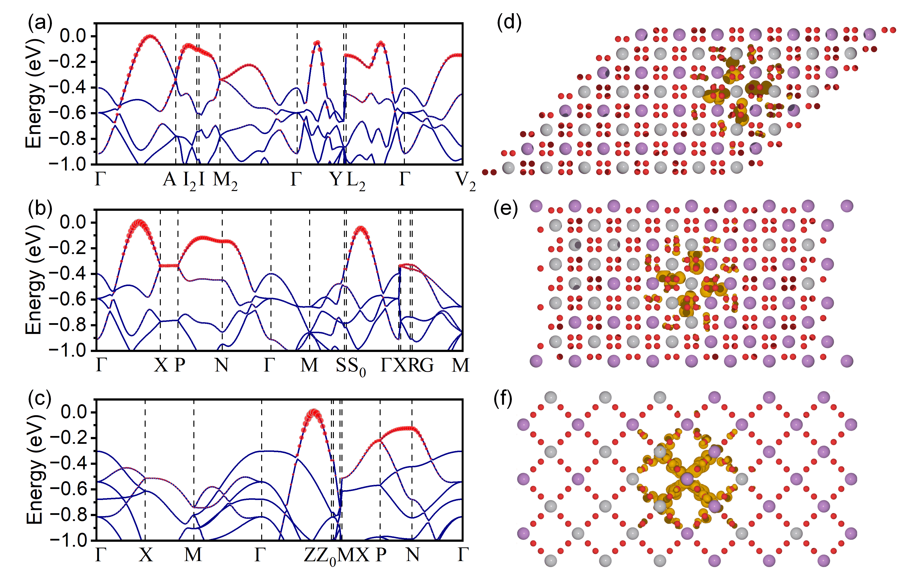
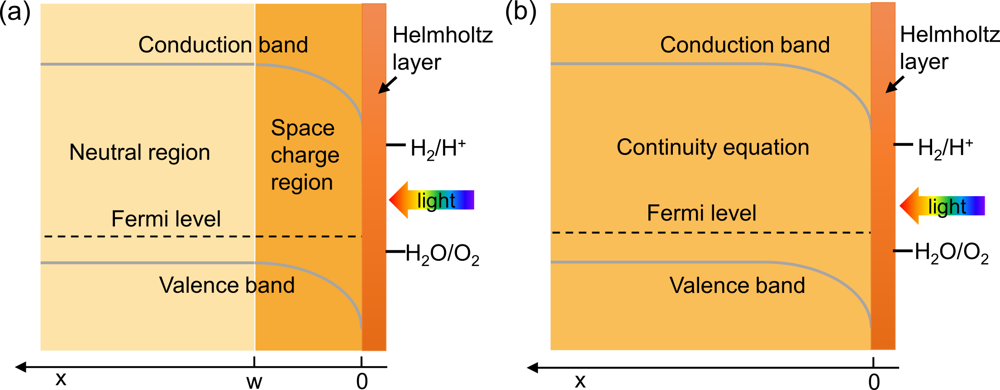

Electron-Phonon Coupling & Beyond
My research centers on understanding how charge carriers interact with lattice vibrations in real materials — from first-principles polaron characterization to applying tensor cross interpolation (TCI) for many-body diagrammatic calculations of electron-phonon systems.
Unveiling Asymmetric Polaron Formation in CeO₂
This work studied the fundamental physics of polarons in CeO₂, where I found the coexistence of two different polaron types in the same material: electrons form localized Holstein polarons, while holes form delocalized Fröhlich polarons. The results help clarify the microscopic carrier transport mechanisms and the roles of different phonon modes in limiting carrier mobility.
METHODOLOGY
DFT+U, Electron-Phonon Coupling
MATERIAL SYSTEM
CeO₂ (Ceria)

CeO₂ Polarons
Holstein vs. Fröhlich polaron coexistence
Crystal Symmetry's Role in Polaron Transport
This project studied how crystal structure influences polaron behavior by comparing three phases of BiVO₄ and investigating the polaron controversy in TiO₂. The results suggest that crystal symmetry plays a key role in determining polaron type and transport anisotropy. An interesting finding was the "crossover" behavior in TiO₂, where anatase and rutile exhibit opposite electron and hole polaron types.

Macro-Meso Modeling for Photoelectrode Design
This project built a continuity equation model fed by first-principles parameters to connect quantum mechanical calculations with device-level performance predictions. Using this approach, I estimated the optimal film thickness for p-type CuFeO₂ and explored the structural optimization of n-type Fe₂O₃ from thin films to nanowire arrays.
- check_circle First-principles parameters → Device-level predictions
- check_circle Optimized CuFeO₂ film thickness & Fe₂O₃ nanowire design

CrystalCanvas
C++ (Eigen/Spglib) · wgpu · React/TS
Developing a hardware-accelerated desktop application for computational materials science, aiming to bridge the gap between crystal structure modeling and DFT/MD simulation preparations.
- check_circle Physics Kernel: C++ engine for Miller index slab cleaving, space group topology evaluation, and MIC validation.
- check_circle Native Rendering: GPU compute pipelines for real-time atomistic manipulation.
- check_circle Ecosystem Integration: Exporters for VASP, Quantum ESPRESSO, and LAMMPS.
PolaronTCISolver
C++23 · Eigen · OpenMP · Tensor Train
A high-performance Tensor Cross Interpolation (TCI) engine for evaluating high-dimensional integrals and compressing multivariate functions into Tensor Train (TT) format. The library is designed for evaluating polaron Feynman diagrams, but the TCI engine itself is physics-agnostic — any function f : ℤN → ℝ with low Schmidt rank can be decomposed.
-
check_circle
Zero-Allocation Hot Path: C++20 Concepts +
std::mdspanout-parameter interface — zeronew/deletein the solve loop. - check_circle CI Recompression: Cross-interpolation-based ‖·‖∞ truncation — superior to SVD for sharp features.
- check_circle Deterministic Global Search: Halton QMC + fixed-seed MCMC + rook coordinate descent for robust pivot discovery.
- check_circle Built-in Diagnostics: Pre-solve entanglement profiler (von Neumann entropy) + post-solve Monte Carlo convergence validator.
10D Chain-Coupled Lorentzian Demo
1610
grid points (~1.1 trillion)
530K
TT parameters
2M×
compression ratio
─── Entanglement Profiling ───
Max entropy: 0.1684
TCI feasible: ✅ Yes
···
─── TCI Learning ───
Status: ✅ Converged
Residual: 9.96e-07
···
─── TT Structure ───
Compression: 2,073,611×
Skills & Expertise
The computational tools and methods supporting my research.
PROGRAMMING
- Python (NumPy, SciPy)
- C++ (Eigen, STL)
- Julia
SCIENTIFIC SOFTWARE
- Quantum ESPRESSO
- VASP
- Wannier90
- EPW
- TRIQS/dft_tools (contributor)
METHODS
- Density Functional Theory
- Electron-Phonon Coupling
- Tensor Cross Interpolation
- Polaron Theory
LANGUAGES
- Chinese (Native)
- English
Future Research Interests
Electron-Phonon Coupling in Strongly Correlated Systems
I hope to explore first-principles approaches for modeling EPC in strongly correlated materials. The interplay between strong electron-electron repulsion and lattice dynamics is relevant to understanding metal-insulator transitions and unconventional superconductivity.
Computational Design of Superconducting Materials
I am interested in studying phonon-mediated pairing mechanisms in different material families, including conventional superconductors under high pressure and unconventional systems, to better understand the conditions for higher transition temperatures.
Many-Body Methods for Polaron Systems
Building on recent advances in Quantics Tensor Cross Interpolation, I aim to extend TCI-based diagrammatic approaches to evaluate high-order Feynman diagrams for polaron systems in realistic multi-orbital materials, moving beyond model Hamiltonians toward first-principles accuracy.